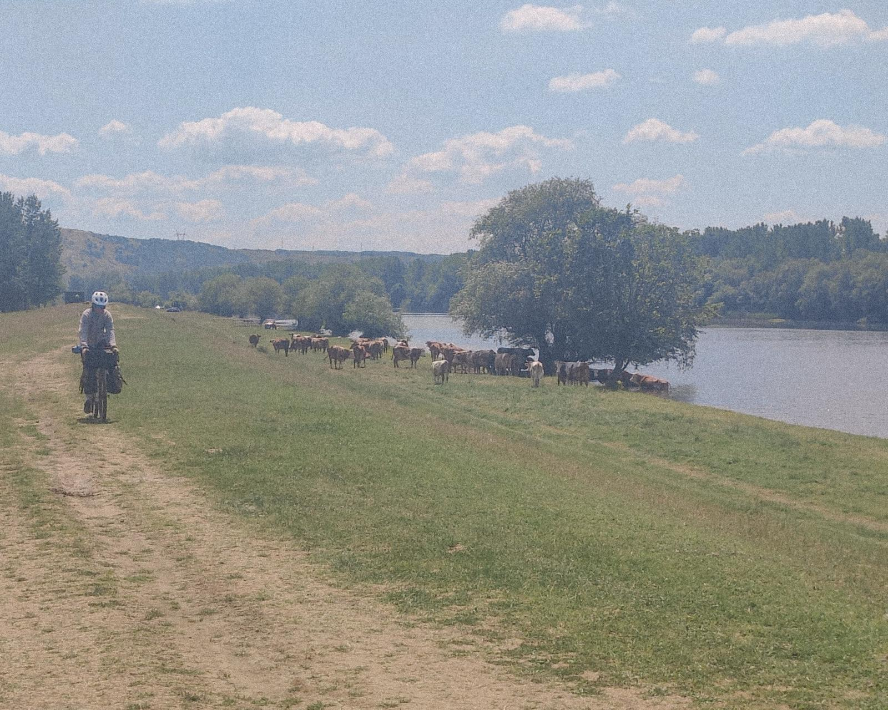

01
Route
Cet itinéraire de Varna, en Bulgarie, jusqu’à Paris, en France, s’appuie notamment sur l’axe de l’EuroVelo 6. Il traverse la Bulgarie, la Roumanie, la Serbie, la Hongrie, la Croatie, l’Autriche, l’Allemagne et la France. Le trajet alterne routes secondaires, pistes cyclables et chemins gravel, créant une diversité de paysages et de conditions de roulage.